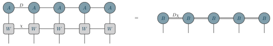

Examples / 11
MPO applied to an MPS

An MPO applied to an MPS, the naive way: contract each W into the A above it.
Site by site the result is one tensor again, but its bonds are two indices fused into one – the MPS's of dimension D and the MPO's of dimension chi – so the bond dimension is D chi. The double line says that: it is one index, and it is two. Every algorithm for this product (zip-up, density matrix, fitting) exists to bring that bond back down without paying for the D chi.
The picture
Point at a line to see what it draws, or at the picture to see which line drew it.
\begin{tikzpicture} \tnstack{X}{5}{ket, op} \tnlayer{X}{ket}{5*coef/$A$} \tnlayer{X}{op}{5*mpo/$W$} \tnconnect{X} \tnopen{down}{X} \tnmid{X-ket-1}{X-ket-2}{$D$} \tnmid{X-op-1}{X-op-2}{$\chi$} \tneq \tnstack{Y}{5}{ket} \tnlayer{Y}{ket}{5*coef/$B$} \tnconnect[along=fused]{Y} \tnopen{down}{Y} \tnmid{Y-ket-1}{Y-ket-2}{$D\chi$}\end{tikzpicture}
The whole file
\documentclass[border=4pt]{standalone}\usepackage{amsmath,amssymb}\usepackage{tikz-tensors}\input{notation}\begin{document}\begin{tikzpicture} \tnstack{X}{5}{ket, op} \tnlayer{X}{ket}{5*coef/$A$} \tnlayer{X}{op}{5*mpo/$W$} \tnconnect{X} \tnopen{down}{X} \tnmid{X-ket-1}{X-ket-2}{$D$} \tnmid{X-op-1}{X-op-2}{$\chi$} \tneq \tnstack{Y}{5}{ket} \tnlayer{Y}{ket}{5*coef/$B$} \tnconnect[along=fused]{Y} \tnopen{down}{Y} \tnmid{Y-ket-1}{Y-ket-2}{$D\chi$}\end{tikzpicture}\end{document}